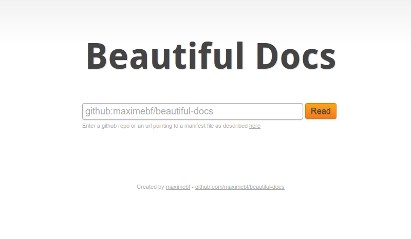

Beautiful docs
Beautiful docs is a documentation viewer based on markdown files.
Documentation manuals can be described in a manifest file using JSON.
Features:
- Markdown syntax (with support for Github Flavored Markdown)
- Uses files (store them anywhere, in git for example)
- Automatically generate the table of content
- Clean and simple to use interface
- Stylesheet for printing
- Supports embedly
- Easy to customize (eg.: for organizations)
- Support for multiple manifests with an index page

Requires a recent build of nodejs (tested on 0.6.7).
Install using npm:
npm install beautiful-docsManifests
Manifests are not mandatory but they allow to specify custom options for your documentation.
A manifest file contains a JSON object with the following properties:
- title: Title of the manual (optional, default "Documentation")
- files: An array of files
- home: The file to display as the manual homepage (won't be used when computing the TOC)
- category: Category of the manual (used on the homepage) (optional, default none)
- css: An absolute URL to a CSS stylesheet that will be included in the page
- codeHighlightTheme: The highlightjs theme for code highlighting (http://softwaremaniacs.org/soft/highlight/en/)
- embedly: Activate embedly with the specified api key. Links to embed must be placed alone in a paragraph.
Files can be absolute URIs or relative to the manifest file.
Example:
{
"title": "Beautiful Docs",
"files": ["README.md"]
}Usage
bfdocs [options] [/path/to/manifest.json] [/path/to/output/dir]Available options:
- --help : Display the help information
- --server : Create an HTTP server to access the generated documentation
- --port : The port on which the HTTP server shoud listen
- --watch : Watch files for modifications and reload them automatically
- --manifests-only : Do not treat the last argument as the output dir but also as a manifest
- --title : Title of the index page
- --base-url : Base url of all links
- --index-only : Only generate the index file. The last argument should be the filename of the index
- --version : Display the installed version of beautiful-docs
Default output dir is ./out.
You can specify the path to a directory containing markdown files (*.md) instead of a manifest file.
Mutliple manifests
Beautiful docs can handle multiple manifests at once and generate and index file to easily access each of them.
bfdocs [options] [--manifests-only] /path/to/first/manifest.json /path/to/second/manifest.json /path/to/third/manifest.json [/path/to/output/dir]If you have more than one manifest and you don't want to specify the output dir, you must use the --manifests-only option.
When multiple manifests are specified, each generated ones will be located in its own subfolder.
You can also generate the index file on its own using --index-only:
bfdocs --index-only /path/to/manifest.json /path/to/manifest.json index.htmlStyling
You can use the following css classes to style your documentation (suround a block with a div tag):
- note: grey box
- warning: orange box
- tip: green box
Tables will be automatically formated.